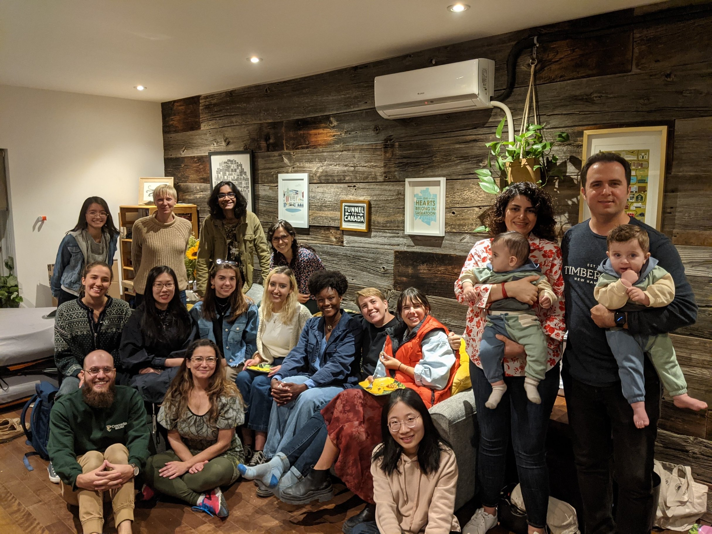
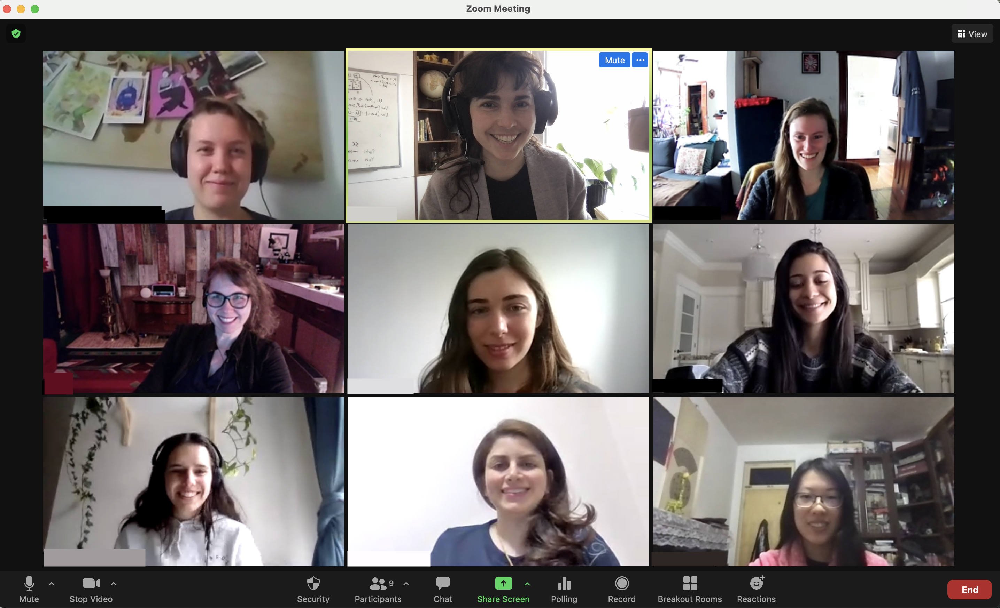
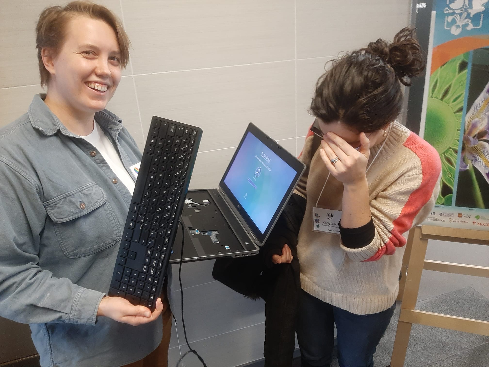
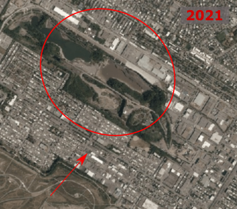
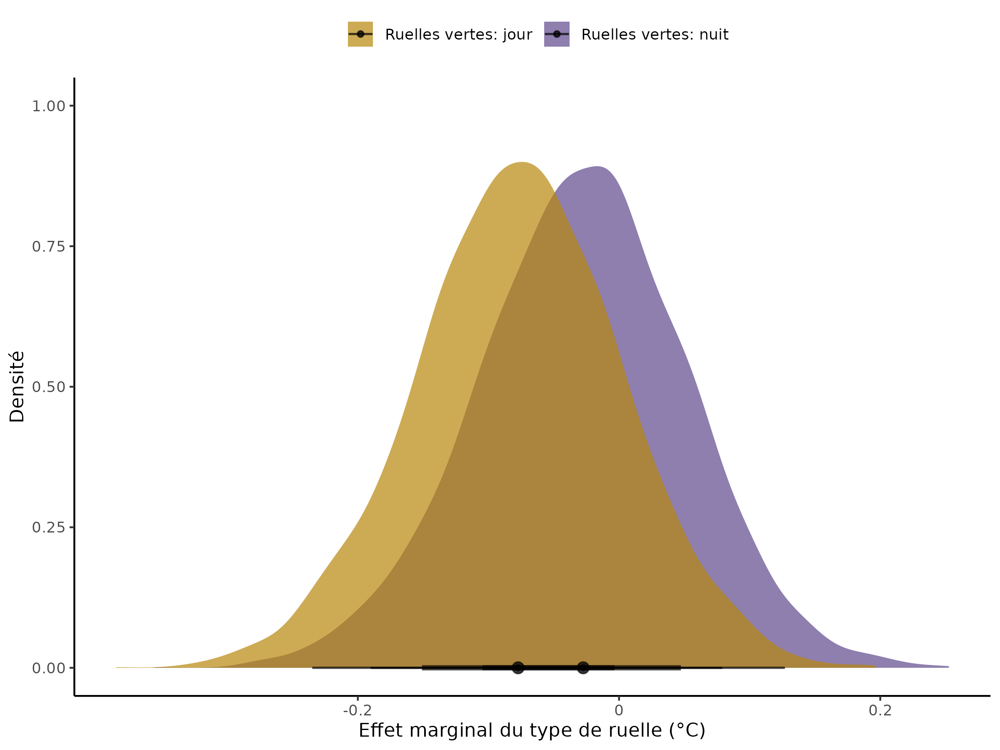

Service écosystémique | Nombre total de mentions |
|---|---|
Verdissement | 66 |
Refroidissement | 59 |
Arbres | 58 |
Fleurs | 52 |
Soutien à la faune | 48 |
Plantes comestibles | 40 |
Gestion | 38 |
Biodiversité | 33 |
Grands arbres | 31 |
Espaces sauvages | 27 |
Vignes | 23 |
Odeur | 19 |
Entretien | 18 |
Couleurs | 13 |
Gestion des eaux pluviales | 10 |
Espèces indigénes | 8 |
Surface perméable | 3 |
Qualité de l’air | 2 |
Allergies | 1 |
Exploring causes and predictors of urban forest benefits in Canadian cities
Thank you!




Carly & the ZULE lab
Committee members & examiners
Collaborators at UQAM, UdeM, Organisme Respire, UBC, McGill, MUN, uOttawa
Alec, Laura, Andrew, Anne-Sophie, and many more!
My friends and family
Chapter 1: Land-use history causes differences in park nighttime cooling capacity and forest structure



L’atténuation de la température est variable à Montréal
